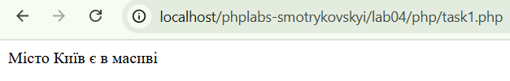
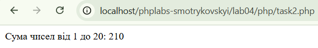

Лабораторна робота №4
Тема: Робота з масивами та функціями
Виконав: Смотриковський Леонід Леонідович
Група: KN1-B22
Варіант: 4
Дата виконання: 15.04.2025
Завдання
- 1. Пошук елементу в масиві
Створіть масив із назвами міст. Напишіть скрипт, який перевіряє, чи місто "Київ" є в масиві.
Перейти до розв’язку

- 2. Функція для обчислення суми елементів
Розробіть функцію sumArray($array), яка повертає суму всіх елементів масиву. Використайте її для масиву чисел від 1 до 20.
Перейти до розв’язку
